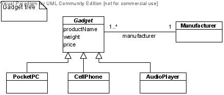
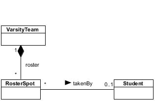

Exercise Set #4
CS 332/780: Object-Oriented Databases
Keitaro Yukawa, Department of Computer Science, Queens College, CUNY
Exercise Set #4
1. You are to model the classes CrewMember, Pilot, and Attendant
given in Q2 of
Exercise Set #2
by a composite structure without use of inheritance.
- Give a UML diagram that models the three classes by a composite structure.
Include the headers of all necessary delegation functions.
- Implement the model in Java, including
the delegation functions in the Pilot and Attendant classes.
2. Compare true inheritance and the composite-structure method for modeling specialization
hierarchies of classes (as discussed in Course Notes #6).
- What is an advantage of the composite-structure method over true inheritance?
- What is an advantage of true inheritance over the composite-structure method?
3. You are to model the classes Item, Book, and CD
given in Q3 of
Exercise Set #2
by a composite structure without use of inheritance.
- Give a UML diagram that models the three classes by a composite structure.
Include the headers of all necessary delegation functions.
- Implement the model in Java, including
the delegation functions in the Book and CD classes.
4.
The following is an inheritance tree of "gadgets".

-
Remodel the inheritance tree to a composite structure using an abstract role class.
Include the headers of all necessary delegation functions.
-
Implement the model in Java, including
the delegation functions in the abstract role class.
5.
Describe a reasonable interpretation of valid time of objects in the following classes in
the college example:
Student, Take, Grade, Employee, Employment, Office, Course, CourseSection.
6.
Consider this
example airline model.
Describe a reasonable interpretation of valid time of objects in each of the classes.
7.
Consider the example college model.
Departments may update the credits, hours, and descriptions of courses they offer
while keeping their numbers and titles intact.
Remodel the Course class to record the bitemporal histories of these three attributes,
and implement the remodeling in Java.
8.
In the example college model only the current chairperson is recorded by
the relation chairPerson: Department → Professor.
Remodel this relation to record the bitemporal history of all chairpersons of
every department, and implement the remodeling in Java.
9.
Consider the aggregate model of the Contract(Architect, Company, Building) relation described in
Course Notes #4.
Remodel the Contract class to incorporate its bitemporal history, and implement
the remodeling in Java.
10.
In the following model of varsity teams,
the roster spots are assumed to be the ones that currently exist, and
the takenBy relation only records which roster spots are being taken by which students
at the present time.

However, roster spots may be added and deleted, and each roster spot may be taken
by different students at different times.
Remodel the above diagram to incorporate the bitemporal histories of roster spots and the takenBy relation,
and implement the remodeling in Java.
11.
Consider the following scenario of a certain event's history
(tense is used relatively to the respective transaction times):
transaction time fact and its valid time entered into database
06/15/08: The event is scheduled to take place at site s1 from 07/01/08 to 08/31/08.
06/25/08: The event's time schedule is changed to take place from 07/10/08 to 09/10/08.
08/10/08: The event was moved to site s2 on 08/01/08; the time schedule remains the same.
09/01/08: The event's time schedule is extended to take place until 10/31/08.
09/15/08: The event is scheduled to move back to site s1 on 10/01/08; the time schedule remains the same.
-
Give a bitemporal space displaying the bitemporal history of the event.
-
Give an object diagram representing the bitemporal history of the event.